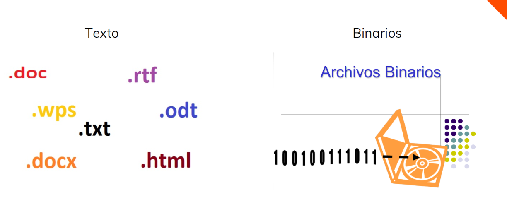

Sistemas de
almacenamiento
de la informaciónInformation
storage
systems
Marina Preciados Agapito
Lo que vamos a verWhat we'll cover
- 01Dato, información y sistema de informaciónData, information & information systems
- 02La evolución del almacenamientoThe evolution of storage
- 03Ficheros: la solución anterior a la BDFiles: the solution before databases
- 04Qué es una base de datosWhat a database is
- 05Tipos y modelos de datosTypes and data models
- 06El sistema gestor de bases de datos (SGBD)The database management system (DBMS)
- 07SQL y sus cuatro sublenguajesSQL and its four sub-languages
- 08Dónde vive una base de datosWhere a database lives
De un dato suelto a una decisiónFrom a bare fact to a decision
22 ºC
22 ºC en Sevilla el 15 de julio22 °C in Seville, July 15th
“Hace calor, riego las plantas”“It’s hot — water the plants”
Un dato es un hecho registrado. La información es ese dato ya procesado y con contexto. Cuando se usa para decidir, se convierte en conocimiento.A datum is a recorded fact. Information is that data once processed and given context. Used to decide something, it becomes knowledge.
Toda empresa opera sobre unoEvery company runs on one
Un conjunto organizado de elementos —informatizados o no— para tratar y administrar datos y cubrir una necesidad concreta.An organised set of elements — computerised or not — that processes and manages data to meet a specific need.

¿Dato, información o conocimiento?Datum, information or knowledge?
Lee cada frase tú solo/a y decide en qué categoría encaja, antes de comentarlo en voz alta.Read each sentence on your own and decide which category it belongs to, before we discuss it out loud.
«48»
«48 pulsaciones por minuto en reposo, en el alumno de la fila 3»«48 beats per minute at rest, for the student in row 3»
«Está muy bajo para su edad — hay que avisar a su familia y llamar al 112»«That's very low for his age — call his family and dial 112»
Del hecho aislado a la decisiónFrom a bare fact to a decision
«48»
«48 ppm en reposo, alumno fila 3»«48 bpm at rest, student in row 3»
«Aviso y llamo al 112»«Alert them and call emergency services»
El dato no dice nada por sí solo. La información lo sitúa en contexto. El conocimiento aparece en cuanto decides actuar.A datum says nothing on its own. Information gives it context. Knowledge appears the moment you decide to act.
De la arcilla al disco magnéticoFrom clay to the magnetic disk
Tablillas de arcillaClay tablets
Documentación económica cuneiforme en Mesopotamia: el primer registro de la necesidad humana de guardar datos.Cuneiform economic records from Mesopotamia — the earliest known way of keeping data long-term.
Cintas magnéticasMagnetic tape
Sólo lectura secuencial: para llegar a un registro hay que recorrer todos los anteriores. Mucha redundancia.Sequential access only: reaching a record means passing through every one before it. Heavy redundancy.
Discos + jerárquico / en redDisks + hierarchical / network
El acceso directo generaliza el disco. Nacen las BD jerárquicas (árbol) y en red (muchos-a-muchos).Direct access makes the disk standard. Hierarchical (tree) and network (many-to-many) databases appear.
Del modelo relacional al Big DataFrom the relational model to Big Data
Modelo relacionalRelational model
Edgar F. Codd (IBM): tablas bidimensionales relacionadas entre sí. El modelo más extendido hoy.Edgar F. Codd (IBM): two-dimensional tables linked together. Still the most widely used model.
DB2 y nace SQLDB2 and SQL is born
IBM lanza DB2 y crea SQL, el lenguaje de consultas que sigue dominando las BD relacionales.IBM releases DB2 and creates SQL, the query language that still dominates relational databases.
Distribuidas y orientadas a objetosDistributed & object-oriented
Grandes BD repartidas entre servidores (Facebook). Se añaden objetos, imágenes, voz.Huge databases split across servers (Facebook). Objects, images and voice get added.
Multidimensional, NoSQL y Big DataMultidimensional, NoSQL & Big Data
Data Warehouse y OLAP; el Big Data trae NoSQL — clave-valor, documental, grafos, columnar.Data Warehousing and OLAP; the Big Data boom brings NoSQL — key-value, document, graph, column-based.
Dos maneras de clasificar un ficheroTwo ways to classify a file
Legible en cualquier editor: .txt, .csv, .html, .sql.Readable in any editor: .txt, .csv, .html, .sql.
Sólo legible con la aplicación adecuada: .exe, .pdf, .docx, .jpg.Only readable with the right app: .exe, .pdf, .docx, .jpg.

Hay que recorrer todos los registros anteriores (cinta).You must pass through every earlier record (tape).
Se salta directo al registro que interesa (SSD/NVMe).Jump straight to the record you need (SSD/NVMe).
Cada aplicación, su propio ficheroEvery application, its own file
RRHH y contabilidad guardaban cada uno un fichero distinto con los datos de los empleados. Esto generaba cuatro problemas recurrentes:HR and accounting each kept a separate file with employee data. This created four recurring problems:
- ✕Redundancia de datosData redundancy
- ✕Mal aprovechamiento del espacioWasted storage space
- ✕Inconsistencia entre ficherosInconsistency between files
- ✕Aislamiento de la informaciónIsolated information
Un cliente cambia de teléfonoA customer changes their phone number
Leed la situación en grupo y debatid: ¿cuáles de los cuatro problemas de los ficheros aparecen aquí?Read the situation as a group and discuss: which of the four file problems show up here?
Ventas guarda sus clientes en un Excel. Contabilidad guarda los mismos clientes en otro Excel distinto. Un cliente llama para avisar de que ha cambiado de número. Ventas actualiza su archivo… pero nadie avisa a Contabilidad, que tres meses después le sigue llamando al teléfono antiguo.Sales keeps its customers in a spreadsheet. Accounting keeps the same customers in a different one. A customer calls to say their number has changed. Sales updates its file… but nobody tells Accounting, which is still dialling the old number three months later.
- ?Redundancia de datosData redundancy
- ?Mal aprovechamiento del espacioWasted storage space
- ?Inconsistencia entre ficherosInconsistency between files
- ?Aislamiento de la informaciónIsolated information
Dos problemas, no cuatroTwo problems, not four
- ✓Redundancia de datosData redundancy
- ✕Mal aprovechamiento del espacioWasted storage space
- ✓Inconsistencia entre ficherosInconsistency between files
- ✕Aislamiento de la informaciónIsolated information
El mismo cliente vive duplicado en dos Excels (redundancia); cuando uno se actualiza y el otro no, empiezan a decir cosas distintas (inconsistencia). No hay aislamiento real —ambos ficheros podrían cruzarse por nombre o ID— ni el problema tiene que ver con el espacio ocupado.The same customer lives duplicated in two spreadsheets (redundancy); once one is updated and the other isn't, they start disagreeing (inconsistency). There's no real isolation — both files could still be cross-referenced by name or ID — and the issue has nothing to do with storage space.
Datos interrelacionados, integridad, redundancia mínimaInterrelated data, integrity, minimal redundancy
Conjunto de datos organizados en ficheros binarios, accesibles por varios usuarios y aplicaciones a la vez.A set of data organised in binary files, accessible to several users and applications at the same time.
- ✓Independencia entre datos y programasIndependence between data and programs
- ✓Menor redundanciaLess redundancy
- ✓Integridad de los datosData integrity
- ✓Mayor seguridadGreater security
- ✓Acceso simultáneo de varios usuariosSimultaneous access by several users
- ✕Instalación costosaCostly to set up
- ✕Requiere personal cualificadoRequires skilled staff
- ✕Implantación larga y costosaLong, costly rollout
El vocabulario básicoThe core vocabulary
DatoData
1996 como año de nacimiento.1996 as a year of birth.
Campo / columnaField / column
Ej.: el campo FechaNacimiento.E.g. the BirthDate field.
Registro / tupla / filaRecord / tuple / row
Todos los datos de una persona.All the data belonging to one person.
Clave primaria (PK)Primary key (PK)
Identifica de forma única cada registro.Uniquely identifies each record.
Tabla, consulta, índice, vista, esquemaTable, query, index, view, schema
TablaTable
Todos los clientes → tabla Clientes.Every customer → the Customers table.
Consulta / queryQuery
Pide datos que cumplan ciertos criterios.Requests data that meets certain criteria.
ÍndiceIndex
Ordena campos para buscar más rápido.Orders fields to search faster.
VistaView
Tabla virtual generada por una consulta.A virtual table generated by a query.
EsquemaSchema
Tablas, campos y relaciones de la BD.The database's tables, fields and relationships.
Encuentra los elementosFind the elements
Esta es la tabla “Alumnos” de la base de datos de un instituto. Localiza en ella un campo, un registro y la clave primaria.This is the “Students” table from a school's database. Find a field, a record and the primary key in it.
| DNI | NombreName | FechaNacimientoBirthDate | CursoGrade |
|---|---|---|---|
| 04512378Z | Lucía Fernández | 14/03/2009 | 1º DAM |
| 08765432X | Marcos Ibáñez | 22/11/2008 | 1º DAM |
Así se identificanHere's how to spot them
| DNI | NombreName | FechaNacimientoBirthDate | CursoGrade |
|---|---|---|---|
| 04512378Z | Lucía Fernández | 14/03/2009 | 1º DAM |
| 08765432X | Marcos Ibáñez | 22/11/2008 | 1º DAM |
De la jerarquía a las tablasFrom the hierarchy to the tables
Árbol, unidireccional. 1 padre → N hijos. El registro de Windows.Tree-shaped, one-directional. 1 parent → N children. The Windows registry.
Grafo: relaciones N:M entre nodos padre e hijo.Graph: N:M relationships between parent and child nodes.
Tablas bidimensionales relacionadas por campos. El más usado.Two-dimensional tables linked by fields. The most widely used.
Tipos compuestos y herencia. Ingeniería, datos espaciales.Composite types and inheritance. Engineering, spatial data.
Multidimensional, NoSQL y ubicaciónMultidimensional, NoSQL & location
Cubos de datos para Data Warehouse y OLAP.Data cubes for Data Warehousing and OLAP.
Clave-valor, documental, grafos, columnar.Key-value, document, graph, column-based.
Un único servidor: Access, MySQL, PostgreSQL, Oracle.A single server: Access, MySQL, PostgreSQL, Oracle.
Repartida en varias máquinas: Oracle Cloud, MongoDB, Redis.Spread across several machines: Oracle Cloud, MongoDB, Redis.
BD ≠ SGBDDatabase ≠ DBMS
La base de datos es la información organizada; el SGBD es el software que la crea, manipula y administra. Oracle, MySQL, MariaDB, Access, MongoDB y PostgreSQL son SGBD.The database is the organised information; the DBMS is the software that creates, manipulates and administers it. Oracle, MySQL, MariaDB, Access, MongoDB and PostgreSQL are DBMSs.
Independencia de datos · seguridad · integridad y transacciones · acceso concurrente · copias de seguridad.Data independence · security · integrity and transactions · concurrent access · backups.
Diccionario de datos · espacio de datos · herramientas de administración (DBA).Data dictionary · data space · administration tools (DBA).
ACID
AtomicidadAtomicity
Todas las operaciones se ejecutan, o ninguna.Every operation runs, or none of them do.
ConsistenciaConsistency
De un estado válido a otro estado válido.From one valid state to another valid state.
AislamientoIsolation
Ninguna transacción ve el resultado de otra en curso.No transaction sees another one's in-progress result.
DurabilidadDurability
Confirmada la operación, no se pierde.Once confirmed, the data will not be lost.
Se va la luz a mitad de la transferenciaThe power goes out mid-transfer
Un banco transfiere 500 € de la cuenta A a la cuenta B. El sistema resta el dinero de A… y justo entonces se corta la luz, antes de sumarlo a B.A bank transfers €500 from account A to account B. The system subtracts the money from A… and right then the power goes out, before it's added to B.
Independencia lógica y físicaLogical and physical independence
Del uso doméstico al corporativoFrom home use to enterprise
Datos domésticos o de pequeñas empresas.Home or small-business data.
Grandes volúmenes de datos y transacciones.High volumes of data and transactions.
Perfiles: usuario final, analista/ingeniero de datos, desarrollador y DBA.Profiles: end user, data analyst/engineer, developer and DBA.
Cuatro sublenguajesFour sub-languages
Manipular datosManipulate data
SELECT · INSERT · UPDATE · DELETE
Definir la estructuraDefine the structure
CREATE · ALTER · DROP
Controlar el accesoControl access
GRANT · REVOKE
Controlar transaccionesControl transactions
BEGIN · COMMIT · ROLLBACK
¿A qué sublenguaje pertenece?Which sub-language is it?
Clasifica tú solo/a cada instrucción en DDL, DML, DCL o TCL.On your own, classify each instruction as DDL, DML, DCL or TCL.
Cada orden, su sublenguajeEach command, its sub-language
CREATE TABLE Alumnos (...)
INSERT INTO Alumnos VALUES (...)
GRANT SELECT ON Alumnos TO profesor;
COMMIT;
En casi todas partesAlmost everywhere
AdministrativasAdministrative
Clientes, pedidos, facturas.Customers, orders, invoices.
ContablesAccounting
Pagos, balances, impuestos.Payments, balances, tax filings.
Motores de búsquedaSearch engines
Google indexa casi todo internet.Google indexes almost the entire internet.
CientíficasScientific
Datos climáticos, genómicos.Climate, genomic data.
BibliotecasLibraries
Del instituto a Amazon.From a school library to Amazon.
CensosCensus records
Demografía de pueblos y países.Demographic data for towns and countries.
AntivirusAntivirus
Catálogos de malware conocido.Catalogues of known malware.
ConfiguraciónConfiguration
El registro de Windows.The Windows registry.
Cinco ideas para llevarseFive ideas to take away
- Un ficheroA file es una estructura del sistema operativo para guardar información.is a structure created by the OS to hold information.
- Una base de datosA database se organiza en tablas con registros y campos relacionados.is organised into tables with related records and fields.
- Los modelos de datosData models han evolucionado del jerárquico al relacional y al NoSQL.have evolved from hierarchical to relational and NoSQL.
- Un SGBDA DBMS garantiza integridad, seguridad, concurrencia y recuperación.guarantees integrity, security, concurrency and recovery.
- SQLSQL se divide en DML, DDL, DCL y TCL.is split into DML, DDL, DCL and TCL.
Resumen elaborado a partir de UT1 · Sistemas de almacenamiento de la información — Base de datos, 1º DAM — Marina Preciados Agapito, con materiales de Aitor Medrano (CC BY-NC-SA 4.0).Summary built from Unit 1 · Information storage systems — Databases, 1st year DAM — Marina Preciados Agapito, with materials by Aitor Medrano (CC BY-NC-SA 4.0).
Usa las flechas del teclado, haz clic en ‹ › o pulsa pantalla completa para proyectar en clase.Use the arrow keys, click ‹ ›, or hit fullscreen to project in class.